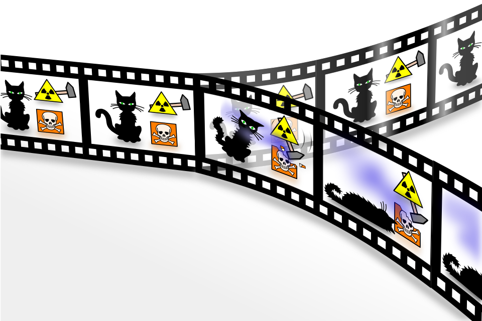

Physics · Interpretation
波動関数は収縮しない——。そう決めたとき、物理学に何が起きたか。1957年、二十代の大学院生がひとり、観測問題に別の答えを書いた。
Hugh Everett III（ヒュー・エヴェレット3世）が博士論文要約「相対状態による量子力学の定式化」を Reviews of Modern Physics 誌で発表。
同年10月、ソ連がスプートニク1号を打ち上げ冷戦の技術競争が激化。3月にEEC(欧州経済共同体)設立のローマ条約が調印された。
論文は10年間ほとんど無視された。「多世界」という名前がついたのは1970年。名付け親はエヴェレット本人ではない。
映画の中で、登場人物が「あの時、もし違う選択をしていたら」と呟く場面がある。それを見た瞬間、自分の胸のどこかが少し鈍く痛むことがある。
誰の記憶にも、「選ばなかった方」の短いシミュレーションが残っている。選んだ方が動き出した途端、選ばなかった方は静かに閉じる。それが当たり前だと、私たちは思っている。
物理学の一つの解釈は、閉じないと答える。
観測した瞬間に片方が消えるのか、両方が残るのか。量子力学の「収縮しない」答えを、分岐するツリーを自分の手で育てながら体験する。
二重スリット実験の終わりに、ひとつの奇妙な事実が残った。光子を観測すると、二つあった可能性のうち片方が消える。観測しなければ、二つは干渉して縞模様になる。観測していないあいだ、光子は「ここにある」ではなく「ここにある可能性がこれだけ、あちらにある可能性がこれだけ」という可能性の分布として振る舞う。量子力学はこの分布を 波動関数波動関数（wave function、記号 ψ） 量子系がとりうる状態すべてを同時に重ね合わせて記述する数学的対象。位置・運動量などを測ったときの値は直接書かれておらず、各値が出る「振幅」の分布として書かれている。絶対値の二乗が、それぞれの測定結果が出る確率になる（Born則）。——記号ではψ（プサイ）——と呼び、シュレーディンガー方程式シュレーディンガー方程式 波動関数が時間とともにどう変化するかを記述する量子力学の基礎方程式。1926年にエルヴィン・シュレーディンガーが発表。ニュートンの運動方程式が古典力学の骨格であるのと同じ位置にある。がその時間発展を書き下す。
ところが、測定器を当てた瞬間にこの分布は急に一つの値に絞られる——ψ が「片方だけ」に切り替わる。これが波動関数の収縮と呼ばれる現象だ。方程式はそこで一度中断され、複数の可能性のうち一つが選ばれ、残りは忽然と消える。コペンハーゲン解釈コペンハーゲン解釈 ボーアとハイゼンベルクを中心に1920年代後半に形成された量子力学の標準的解釈。観測によって波動関数が収縮し、一つの結果が選ばれると考える。量子系と観測者を別扱いする立場。はそう説明する。しかしこの答えには、古くから厄介な穴がある。観測とは何か、誰が観測者か、なぜ方程式が途中で止まるのか——。
1957年、プリンストン大の博士課程にいた26歳のHugh Everett III（ヒュー・エヴェレット3世）は、別の道を示した。方程式は止めない。収縮は起こさない。ただ一つだけ、認めればいい。観測されなかった結果も、観測された結果と同じように続いている——と。
同じ状況で、二つの解釈は別の筋書きを描く。左は結果が一つに「絞られる」と見なし、右は結果が二つに「分かれる」と見なす。ψ は波動関数の標準記号。
これだけ聞けばSF的な思いつきに聞こえる。だが、エヴェレットの主張は正反対だった。余計なもの(収縮)を足しているのはコペンハーゲン側で、こちらはシュレーディンガー方程式をそのまま走らせているだけ——と。多い世界ではなく、少ない前提。それが彼の論文の骨格だった。

よくある誤解
選択のたびに宇宙が分岐する。告白するかどうかを迷った夜、別の自分はもう片方を選んでいる。
実際は
分岐が起きるのは量子的な測定イベントのとき。人間の意思決定は古典的な神経過程で、原則として新しい世界を生まない。脳の奥で量子イベントが効いていない限りは。
よくある誤解
すべての枝は同じ確率で存在する。「別の自分」は自分と同じだけリアルで、同じだけ多い。
実際は
Born則Born則 波動関数の絶対値の二乗が、測定結果の確率を与えるという量子力学の規則。マックス・ボルンが1926年に提唱。多世界解釈では、これが各枝の「重み」になる。によって枝ごとに重みが異なる。たいていの重みは少数の枝に偏って集まる。「ありうる」と「量的にある」は別のこと。
よくある誤解
並行宇宙はどこか別の場所に浮かんでいる。銀河の先に、もう一つの地球がある。
実際は
すべての枝は一つの波動関数の内側にある。互いに干渉できなくなっただけで、別の空間に引っ越したわけではない。座標上の「別の場所」を探してもどこにもない。
Hugh Everett III（ヒュー・エヴェレット3世）
Physicist · 1930–1982
プリンストン大の John A. WheelerJohn A. Wheeler（ジョン・ホイーラー） アメリカの理論物理学者(1911–2008)。ブラックホール、量子情報、幾何力学で知られる。エヴェレットの博士論文指導教官で、彼の「相対状態(relative state)」という用語の名付け親。 のもとで相対状態の定式化を完成させ、1957年に論文を発表。しかし物理学界の反応は冷たく、1959年にコペンハーゲンでボーア本人を訪ねたものの完全な決裂に終わる。そのまま物理学を離れ、Pentagon の Weapons Systems Evaluation Group に移籍。核戦争シナリオ(SIOP)の計算機プログラムを主導した。喫煙、飲酒、肥満、鬱を抱え、51歳で心臓発作で死去。論文が「多世界解釈」として再評価されるのは、彼の死後のことだ。
"The meeting was doomed from the beginning."
「あの会合は、最初から終わっていた。」
— ヒュー・エヴェレット3世、1959年コペンハーゲンでボーアと会った日々を振り返って
ここまでで、エヴェレットが何を主張したかの骨格は揃った。次の体験に入る前に、多世界解釈——英語で Many-Worlds Interpretation、略して MWI ——がどういう立場かを、3行に畳んでおく。これを手に、下のツリーに進んでほしい。
MWIの主張（3行で言うと）
ここから先は、読むのをやめて手を動かしてほしい。下の Canvas は、量子測定が1回起きるたびに、あなたが経験する世界が分岐していく様子を描く。根（左端の黄色い ψ）が観測前のあなた。右に伸びる線が、観測が起きたあとの世界。
ボタンを押すたびに、世界は二つに分かれる。あなたは Born則Born則 波動関数の絶対値の二乗が、測定結果の確率になる量子力学の規則。マックス・ボルンが1926年に提唱。多世界解釈では、この確率がそのまま各枝の「重み」になる。すべての枝は存在するが、重みは均等ではない。 に従って、自動でそのうちの片方に入る。もう一方の枝には、別のあなたが生きている。観測を重ねるほど、あなたの枝は細くなり、「別のあなた」の数は倍々に増える。
気づいてほしいのは、明るく残っているのがあなた、暗く沈んでいるのが別のあなたという絵の意味だ。暗い枝は「消えた可能性」ではない。そこにいる別のあなたからは、今度はこちらが同じだけ暗く見えている。どちらの枝から見ても、自分の枝だけが唯一の現実に見える——MWIの肝は、この非対称の欠如にある。
ここまで読んで違和感があるのは当然だ。波動関数が収縮しない——つまり、測定しても |0⟩ と |1⟩|0⟩、|1⟩（ブラケット記法／ディラック記法） 量子状態を書くときの標準記法。ポール・ディラックが導入した。縦棒＋ラベル＋鉤括弧（⟩）でひとつの「状態ベクトル」を表し、量子系がとりうる基本状態を示す。コインの例で言えば「|表⟩」「|裏⟩」のような感覚。電子スピンなら |↑⟩ と |↓⟩、光子の偏光なら |水平⟩ と |垂直⟩。本文では話を単純にするため、|0⟩ と |1⟩ という2つの基本状態だけを考えている。 の両方の成分が ψ の中に残り続ける——というなら、なぜ実験者には一つの結果しか見えないのか。|0⟩ と |1⟩ のどちらも波動関数の中に居残っているのなら、実験者の目には 両方の目盛りが同時に見えている ような気がしてもおかしくない。複数の結果が同時に知覚されてもよさそうなのに、実際にはそうならない。
答えの鍵は、デコヒーレンスデコヒーレンス 量子系が周囲の環境と無数の粒子レベルで絡まり合い、状態の位相関係が復元不可能になる過程。量子的な重ね合わせが、実質的に古典的な確率分布に見えるようになる仕組み。1970年代以降にZurekらが精密化した。と呼ばれる過程にある。観測装置が量子系と相互作用すると、装置そのものが二つの状態に「絡まる」。そして装置がさらに空気や光や熱と触れた瞬間、膨大な数の粒子が巻き込まれ、二つの枝は互いに干渉できなくなる。片方から見てもう片方は、もう存在しないのと同じように振る舞う。
量子系から装置へ、装置から環境へ——情報が漏れ出すごとに、二つの枝は相手を無視するようになる。これが「分岐して見える」の正体である。中央の ψ は「波動関数」を表す標準記号（ギリシャ文字プサイ、他の量子力学の記事でも同じ意味で登場する）。
干渉できない二つの枝。片方に乗った観測者には、もう片方を感知する方法がない。感知できないもの——物理的に相互作用できないもの——は、その観測者の世界には存在しないのと等しい。消えたのではない。ただ、到達できなくなっただけだ。
収縮はある
Copenhagen
観測で方程式は中断される。一つの結果が残り、残りは消える。「観測者」と「量子系」は別扱い。
足されるもの: 収縮の規則、観測者の特別な位置づけ
収縮はない
Many-Worlds
方程式は止まらない。すべての結果が各自の枝に残り、デコヒーレンスで互いに干渉できなくなる。観測者も波動関数の一部。
足されるもの: なし(シュレーディンガー方程式のみ)
step by step — 測定から分岐まで
重ね合わせ
量子系は複数の状態を同時に持っている
量子系は α|0⟩ + β|1⟩ のような線形結合として存在する。|0⟩ と |1⟩ のどちらかではなく、両方が並んでいる。
測定
観測装置が量子系と相互作用する
測定装置が近づき、量子系と相互作用する。ここで装置は中立の状態「まだ見てない」だ。
もつれ
装置の状態も二つに分かれる
量子系と装置は一つの絡まった状態になる。α|0⟩|装置=A⟩ + β|1⟩|装置=B⟩。装置そのものが二つの状態に分かれる。
デコヒーレンス
環境に情報が漏れ、干渉性が失われる
装置は空気・光・熱と触れる。情報は無数の粒子に刻まれ、二つの枝の位相関係は現実的には二度と整わない。
分岐
枝から枝は見えない
どちらの枝の観測者からも、もう片方は物理的に手が届かない。それぞれが独立した「現実」として続いていく。消えたのではなく、届かなくなっただけ。
1925–1927
量子力学の誕生
Heisenberg、Schrödinger、Bornらが量子力学の基礎を築く。Bornは同時に、波動関数の絶対値の二乗が確率を与える規則を提唱する。
1932
von Neumannが測定問題を形式化
『量子力学の数学的基礎』で、測定による「射影仮設(projection postulate)」が導入される。シュレーディンガー方程式は、観測の瞬間に中断されると明記。
1957
エヴェレットの「相対状態」論文
エヴェレットが Reviews of Modern Physics に短縮版を発表。もともとの呼称は "Correlation Interpretation"。ホイーラーが "relative state" と名付け直した。
1959
コペンハーゲン訪問、決裂
ホイーラーがエヴェレットをコペンハーゲンに送り込み、ボーア本人との対話を試みる。ボーア側のローゼンフェルトは後にエヴェレットを "undescribably stupid" と評した。エヴェレットは物理学研究に戻らなかった。
1970
DeWittが「多世界」を広める
Physics Today 9月号でDeWittが "Quantum Mechanics and Reality" を発表。「many-worlds」という呼称はここで定着する。10年以上の沈黙が終わる。
1982
エヴェレット、51歳で死去
心臓発作。喫煙、飲酒、肥満、鬱。論文が「古典」になる前に本人は亡くなった。遺体は遺言通り、ゴミとして処分された(火葬・墓なし)。
1985
Deutschの量子チューリング機械
David Deutschが量子計算の一般理論を定式化。多世界解釈の立場から「量子コンピュータは別の枝の計算能力を借りる装置」と論じる。
2019
Sean Carroll『Something Deeply Hidden』
一般向けにMWIを正面から擁護した書が刊行。同時期、Hossenfelderらによる批判も活発化し、「Born則の起源」をめぐる論争が続いている。
多世界解釈は、「別のどこかに別の私がいる」という物語ではない。シュレーディンガー方程式を止めないという、方程式の節約についての話だ。止めないかわりに、観測されなかった結果も存在することを認めさせる。SF風の結論が、真面目な倹約から出てきてしまう——そこが不思議さの正体である。
この解釈が最終的に正しいかどうかは、現時点で実験的に決着していない。コペンハーゲン、パイロット波パイロット波（de Broglie–Bohm 理論） 粒子には「実際の位置」があり、それを波動関数が「水先案内人（pilot wave）」として導いているとする解釈。1927年ド・ブロイが原型を提示し、1952年ボームが復活させた。確率的に見える現象はすべて、隠れた初期位置の統計的ゆらぎで説明される。、QBismQBism（Quantum Bayesianism） 波動関数は「世界の状態」ではなく「観測者が抱く合理的な信念（ベイズ確率）」だと見なす解釈。2001年頃にFuchs、Caves、Schackらが提唱。測定結果は観測者にとっての情報更新で、「客観的な物理的収縮」は起きていないと考える。、関係性解釈関係性解釈（Relational Quantum Mechanics） 1996年にカルロ・ロヴェッリが提唱。物理量は「系そのもの」ではなく「ある観測者から見た別の系」についてのみ定義される、とする立場。絶対的な波動関数は存在せず、どの状態も「誰から見た状態か」が必ず付随する。——他にも候補はあり、どれも同じ実験結果を予測する。「どの絵が正しいか」は、物理の問題でありながら、同時にどの絵を綺麗と感じるかの問題でもある。
"There are no wave-function collapses or classical realms. The apparatus itself evolves into a superposition, entangled with the state of the thing being observed."
波動関数の収縮も、古典的な領域も、存在しない。観測装置そのものが重ね合わせへと発展し、観測される対象の状態ともつれていく。
— Sean Carroll, Something Deeply Hidden (Dutton, 2019)
映画が「もしも別の選択をしていたら」を描きたくなるのは、それが物理ではなく倫理の話だからだ。しかし物理の側も、偶然この物語と地続きの絵を描いてしまっている。選ばれなかった枝が本当に続いているかどうか、私たちには確かめる手段がない。確かめられないものは、ある意味、ないのと同じかもしれない。だがないと言い切るには、方程式を途中で止めなければならない——その一点を、Everettは譲らなかった。
「もしも別の選択をしていたら」を描きたい物語は、多世界解釈を発見した——あるいは逆に、多世界解釈を知らないまま同じ絵にたどり着いた。エヴェレットの論文を直接引いてはいなくても、この枠組みを借りている作品は驚くほど多い。代表的なものを並べてみると、MWIの「枝が並列に存在する」という骨格が、SF・映画・ゲームでどう変形されているかが見えてくる。
| 作品名 | 多世界的なモチーフ | 厳密にはMWIか？ |
|---|---|---|
| エブリシング・エブリウェア・オール・アット・ワンス 映画 / 2022 | 別の選択をした自分たちが並列に存在し、主人公は他の枝の自分の能力を借りて戦う。 | ほぼそのまま。「枝が同時に存在する」構造を倫理の話に畳んだ。 |
| Rick and Morty アニメ / 2013– | 無限の宇宙を往復し、「どこかの宇宙では全て起きている」前提が笑いと虚無を生む。 | MWI＋多元宇宙の混合。量子測定に限定せず、あらゆる可能性の枝として使う。 |
| ドクター・ストレンジ／マルチバース・オブ・マッドネス 映画 / 2022 | MCUの多元宇宙。「別の決断をした自分」の世界を行き来する。 | MWI風の多元宇宙。MWIの「同じ波動関数内」という制約は外されている。 |
| Dark Netflix / 2017–2020 | 終盤、二つの並行する世界が同時に存在していたことが明かされる。 | 並行宇宙。時間ループと組み合わされ、MWIの本来の枝とは別種。 |
| Coherence 映画 / 2013 | 彗星の通過中、家の中で「別の枝の自分たち」と遭遇する一夜。 | MWI的。重ね合わせとデコヒーレンスが崩れた状態を家庭劇に縮小した稀な例。 |
| The Man in the High Castle 小説 / ドラマ | 第二次大戦で枢軸国が勝った世界と、連合国が勝った世界が並列に描かれる。 | 歴史改変もの。量子測定ではなく歴史分岐の物語で、MWIのアナロジー。 |
| シュタインズ・ゲート ゲーム / アニメ / 2009– | 「世界線」を飛び移る物語。タイトルからも多世界が強く意識されている。 | 作中で「MWIではない」と明言される。枝が独立に並ぶのではなく、「アトラクター場アトラクター場（attractor field） 『シュタインズ・ゲート』の世界観で導入される架空の物理概念。似通った結末に収束する「引き寄せの領域」のことで、この領域の中にある限り、細かい選択が違っても世界は同じような結果に辿り着く。別のアトラクター場へ渡るには、世界線変動率を一定量動かす必要がある。MWI の「すべての枝が並立して実在する」絵とは異なり、収束点が設定された独自の多世界モデル。現実の物理学にこの概念はない。」に吸い寄せられる独自設定。 |
| Source Code 映画 / 2011 | 同じ8分を異なる分岐として何度もやり直す。最後に「別の枝が続いている」可能性を示唆する。 | MWI的解釈を含む。作中の説明は曖昧で、多世界ととる余地を残してある。 |
表の右列が示すように、「多世界的な物語」と「MWIそのもの」は必ずしも一致しない。たとえばシュタインズ・ゲートは多世界の匂いを強く漂わせながら、劇中で明確にMWIを否定している——世界線は枝として並立するのではなく、「アトラクター場」に収束する別種の構造だ。一方で『エブリシング・エブリウェア・オール・アット・ワンス』のように、物理の枠をかなり忠実に借りた作品もある。エヴェレットが書いた1957年の論文は、本人の意図からはみ出して、世界中の物語の骨組みになった。
"Relative State" Formulation of Quantum Mechanics
相対状態定式化の原典。博士論文の短縮版として発表された。
「多世界(many-worlds)」という呼称を世間に広めた解説記事。エヴェレットの論文が埋もれていた10年余の沈黙を終わらせた。
The Many Worlds of Hugh Everett III
エヴェレット本人の最も詳細な伝記。Pentagon時代の核戦争シナリオ計算の仕事まで含め、人生を総合的に描く。
Something Deeply Hidden: Quantum Worlds and the Emergence of Spacetime
現代的MWI擁護の一般向け決定版。Born則を「自己位置づけの不確定性」から導く議論を紹介する。
Many-Worlds Interpretation of Quantum Mechanics
MWIに対する哲学的論点(Born則の起源、個人の同一性、確率の解釈)を整理した標準参照文献。
Why the Many-Worlds Interpretation Has Many Problems
MWIに対する主要な批判を整理した記事。Born則の導出、個人の同一性、存在論的コストの問題を扱う。